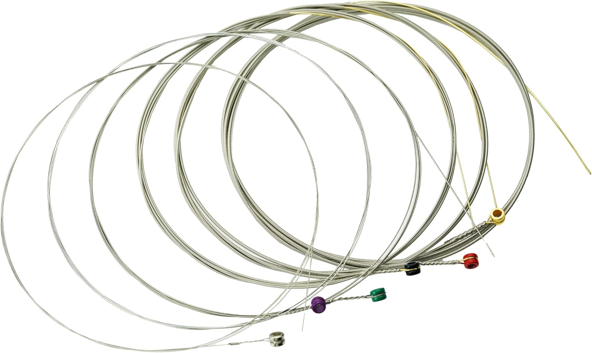

Electric Guitar Strings

Electric guitar strings shape your tone before it ever reaches the amp. From smooth jazz to heavy rock, the right gauge and material give you the feel and sound you are after.
Types of Electric Guitar Strings
Nickel-Plated Steel Strings
The all-round favourite, with a balanced tone and a bright edge. Works well for rock, pop and blues.
- Price range: from $5 to $15
Pure Nickel Strings
A warm, vintage tone with a smooth feel. Popular for classic rock, blues and jazz.
- Price range: from $8 to $18
Stainless Steel Strings
Bright, crisp and highly resistant to corrosion, with strong sustain. A good fit for metal and modern styles.
- Price range: from $8 to $18
Coated Strings
Protected by a thin coating that keeps them feeling fresh and lasting much longer than regular strings.
- Price range: from $12 to $25
Popular Brands
- Ernie Ball
- D'Addario
- Elixir
- Fender
- DR Strings